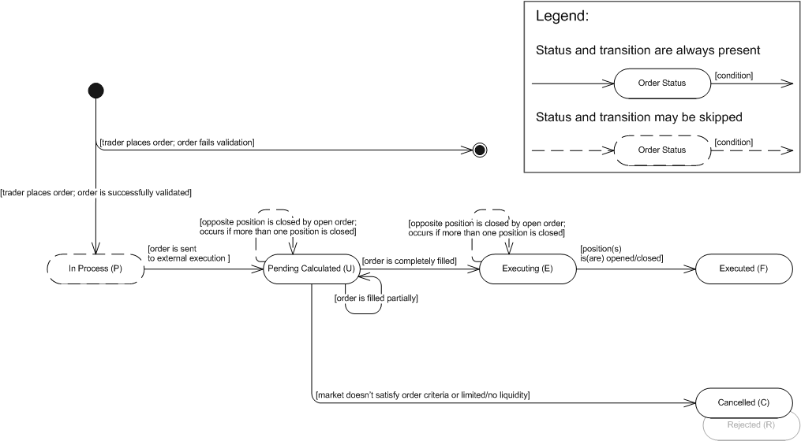

Open/Close, Open/Close Range Orders
Brief
The article describes Open/Close, Open/Close Range orders.
Details
Open/Close, Open/Close Range Orders (generally known as Market Orders) are orders to buy or sell an instrument immediately at a certain price or within a certain price range:
Open/Close order - The order is executed only at the current offer price*.
Open/Close Range order - The order is executed at any price within the specified price range.
Note: If you want guaranteed execution regardless of the order price, you should use an Open/Close Market order.
With open/close, open/close range orders, the trader has the following time-in-force options that provide additional instructions on how long an order should remain active:
Time-in-Force Option |
Description |
Fill Or Kill (FOK) |
An instruction to fill an order immediately and completely or not at all. |
Immediate Or Cancel (IOC) |
An instruction to fill an order (or any of its portions) immediately after it has been brought to the market; any portions not executed immediately must be rejected. An IOC order may be executed in portions. Such execution results in a number of positions opened/closed at different prices. |
Generally, a market order is used for entering the market (opening a position) while a close order is used for exiting the market (closing a position). See execution scenario 1. This is a common rule for regular accounts which are not subject to FIFO and allow hedging. If, however, hedging is disabled, placing a market order in the direction opposite to an existing position will result in closing such position. FIFO-based accounts do not allow placing close orders, so whether the trader is willing to exit the market immediately, he/she must use an open order or a Net Amount Order.
A close order can be specified as a Net Amount Order. This is an instruction to close all positions in the given instrument. This type of order was initially designed for FIFO-based accounts, but has eventually become available for all accounts regardless of their settings. See execution scenario 4.
* The current offer price is the price the trader sees when he/she places the order.
Before sending the order to the bank, the system searches for the best available price. Depending on this price, orders are filled in the following way:
Open/Close order - The order is filled at order price if the best available price is equal to or better than the original order price. If the best available price is worse than the price specified in the order, the system rejects the order.
Open/Close Range order - The order is filled at the best available price within the specified price range. If the best available price is beyond the specified price range, the system rejects the order.
Market orders with IOC time-in-force option can be executed partially. It means that one order may result in a number of positions opened/closed at different prices (if the order is a range order) or at exact order price (if the order is an open/close order). An IOC order is filled in portions to the maximum extent possible (until the liquidity pool is dried up), the remainder of the order is rejected. In case of partial closing, the system closes a position in the filled amount and opens a new position in the remaining amount. See Execution Scenarios.
The state machine below is based on FXCM's order statuses. Note that the system creates an order only after the order is successfully validated. Otherwise, the system creates a rejection message and does not store the order in the database. However, the information about the order (such as, for example, the order ID and the reason for its rejection) is stored in the database.
Open/Close, Open/Close Range Orders: State Machine

Open/Close, Open/Close Range Orders: FXCM Order Statuses Description
Order Status |
Order Status Description |
Transition |
||||||
In Process (P) |
The order was successfully validated and is ready for further execution. |
|
||||||
Pending Calculated (U) |
The status has one of the following meanings:
|
|
||||||
Executing (E) |
The order was completely filled. |
|
||||||
Executed (F) |
A position was opened/closed. Note that the order may result in a number of open/closed positions. |
|||||||
Cancelled (C) |
FOK Orders: |